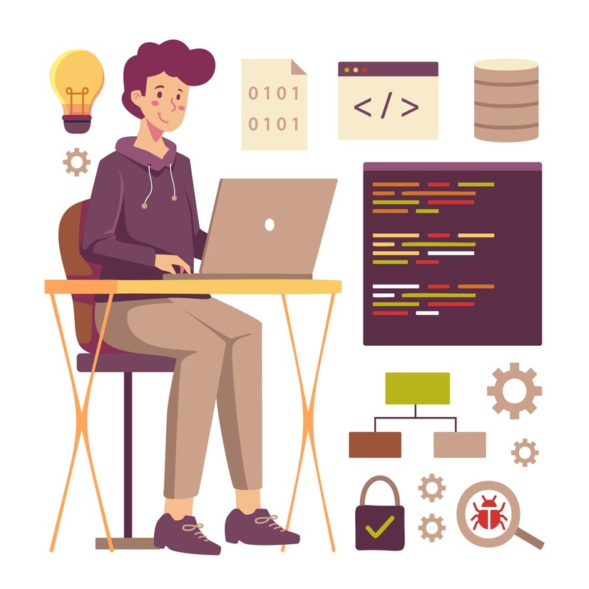
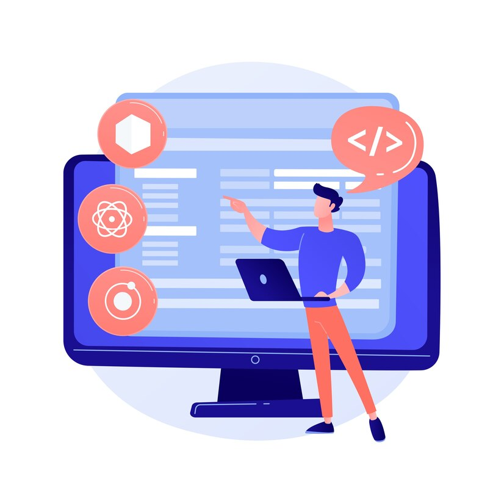
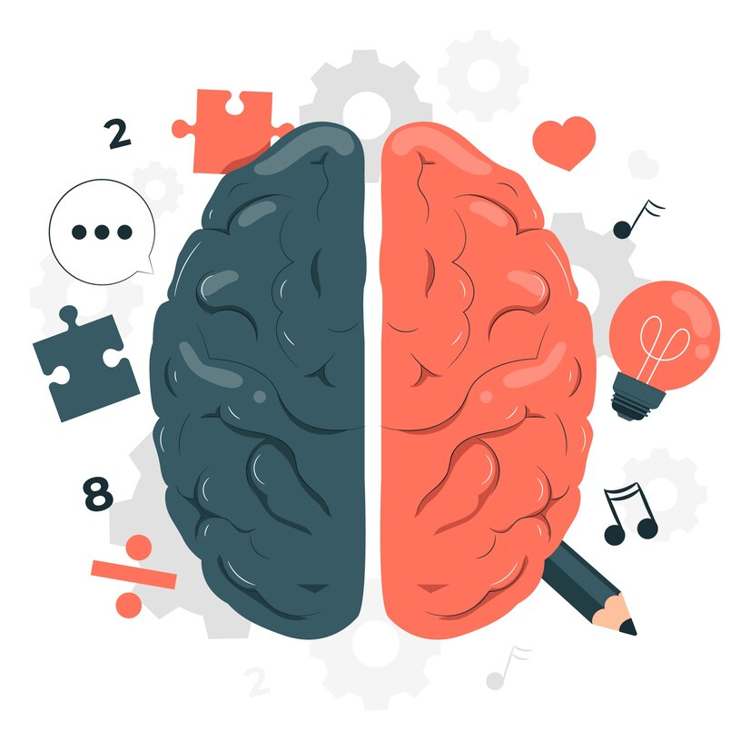

No final de 2022, em uma conversa com minha professora de inglês, ela sugeriu que eu investisse na área de tecnologia. Fiquei pensativo com a ideia, pois me sentia sem rumo e não sabia no que me especializar. Mas, como não tinha nada a perder, decidi dar uma chance à profissão do futuro.
Comecei a assistir a vídeos sobre diferentes áreas de tecnologia, fiz cursos de lógica de programação e algoritmos. Com o tempo, comecei a entender melhor aquilo que antes parecia um bicho de sete cabeças.
Em 2023, iniciei o curso de Análise e Desenvolvimento de Sistemas. Realizei alguns projetos em grupo na faculdade, onde adquiri experiência, conhecimento e aprendi a trabalhar em equipe, lidando com pessoas diferentes.
Em julho do mesmo ano, optei pelo ensino a distância, mudei de universidade e recomecei do zero, construindo uma base mais sólida do que antes. Desde então, venho me aprimorando continuamente.
Atualmente, estou focado em aprender mais sobre desenvolvimento web, com ênfase na criação de sites acessíveis e responsivos. Estou sempre buscando novas tecnologias e aprimorando minhas habilidades para enfrentar diversos tipos de desafios.
O mundo está evoluindo rapidamente, e para acompanhar essa evolução, é essencial se aprimorar, aprender e desenvolver. O conhecimento é o que nos guia para um futuro além do imaginado.
